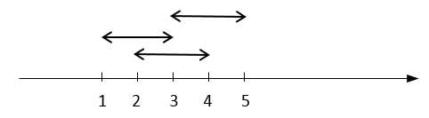

Trên trục số cho n đoạn thẳng [si, di], si là điểm đầu và di là điểm cuối (si < di với 1 ≤ i ≤ n). Hỏi tổng chiều dài được phủ bởi các đoạn trên là bao nhiêu.
Ví dụ cho 3 đoạn [1,3], [2,4] và [3,5] như hình dưới thì tổng chiều dài phủ là 4.

Dữ liệu nhập: gồm các dòng sau
- Dòng thứ nhất là số nguyên n (1 ≤ n ≤ 105) là số lượng các đoạn.
- Trong n dòng tiếp theo, dòng thứ i là hai số nguyên si, di cách nhau một khoảng trắng (0 ≤ si < di ≤ 2 x 109)
Dữ liệu xuất:
- Tổng chiều dài được phủ bởi các đoạn trên.